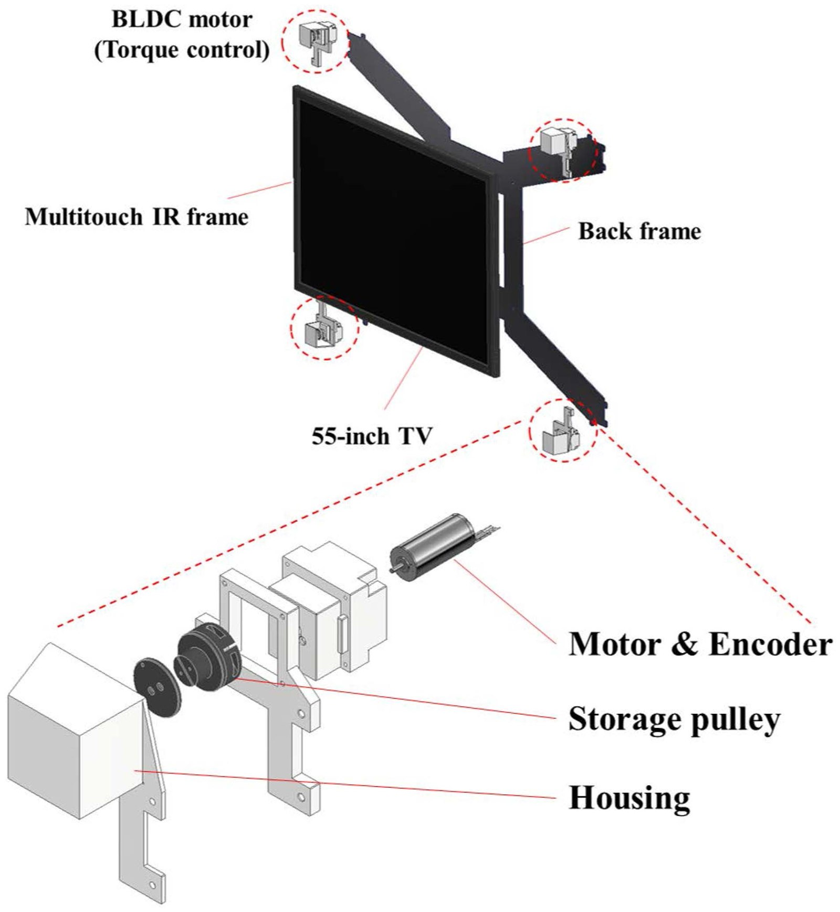

Physical and haptic museum exhibits
How can a haptic exhibit support hands-on learning?
IEEE Transactions on Haptics · Journal article · Dajin Lee and Daehyeon Nam contributed equally.

Research question
Virtual exhibits offer flexibility, but their value depends on how visitors interact with and learn from them. This study compares a physical lever exhibit with a haptic simulation in a science-museum setting.
Prototype and study
The collaborative project uses a two-degree-of-freedom cable-driven device, a large visual display, and a virtual lever simulation to present physical interaction.
Findings
An observational study with children examined interaction behavior, learning, motivation, and enjoyment, demonstrating the potential of haptic exhibits in informal learning.

See the research
Publication
A Comparative Study of Physical and Haptic Exhibits in an Informal Learning Environment
IEEE Transactions on Haptics, 2024.